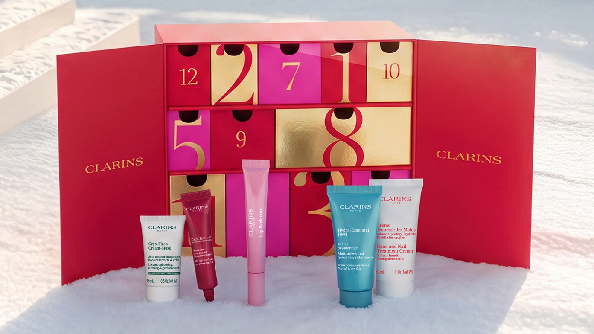
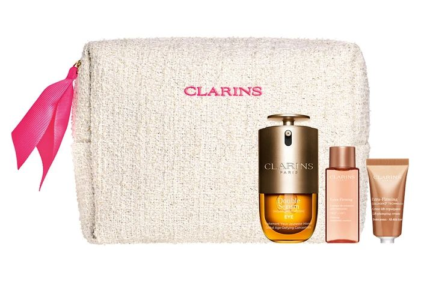
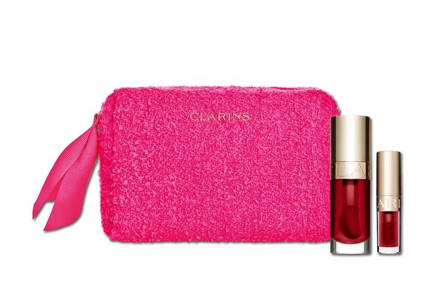

← 图文库NOVEMBER 2026 · CLARINS
娇韵诗三套，我会按用途挑
娇韵诗这几套放一起，我反而更容易选了。
想拆小门、试不同东西，就看12日倒数日历；只想补眼部护理，看双萃眼精华套装；预算小一点，唇油03樱桃的正装加迷你组更直接。
三套不是一个使用场景，没必要因为都是圣诞限定就一起加购物车。尤其日历，先看里面有多少自己真会用，拆盒的快乐和日常需要是两笔账。
原清单日历¥18,700；眼部组¥11,000、唇油组¥5,170。套装组成和日期仍要对照各自渠道，下面把来源和先行安排分开列了。
如果只能留一套，你会选拆盒还是补刚需？
#娇韵诗 #圣诞礼盒 #唇油 #日本美妆
12日倒数日历官方图 · 图片来源
ダブル セーラム アイ ホリデーセット · 图片来源
クラランス「リップ ホリデーセット」 · 图片来源预约与商品信息
N14 · 倒数日历2026アドベントカレンダー2026
日本含税 ¥18,700 · 发售 2026-11-13
高岛屋TBEAUT：10/30 10:00预约
未核实
预约未开始；记录 2026-10-14核对商品／发售来源 ↗N37 · 双萃眼精华圣诞套装ダブル セーラム アイ ホリデーセット
日本含税 ¥11,000 · 发售 2026-11-13
预约未核实。
TRILL/BAILA列11/5官方线上先行销售。
媒体预告；本品日期待官方补核；记录 2026-10-19核对商品／发售来源 ↗N38 · 唇油圣诞套装リップ ホリデーセット
日本含税 ¥5,170 · 发售 2026-11-13
预约未核实。
TRILL/BAILA列11/5官方线上先行销售。
媒体预告；本品日期待官方补核；记录 2026-10-19核对商品／发售来源 ↗